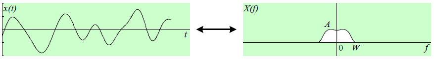
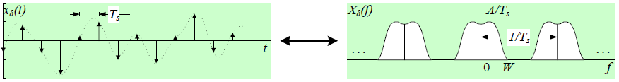

Μέρος 2: Δειγματοληψία - Ψηφιοποίηση¶
Τα πρωτογενή σήματα είναι κυρίως αναλογικά (συνεχούς χρόνου). Για να τα παραστήσουμε και επεξεργαστούμε στον υπολογιστή μας (ή άλλη ψηφιακή μηχανή) θα πρέπει πρώτα να τα ψηφιοποιήσουμε. Υποθέστε ένα σήμα συνεχούς χρόνου \(x(t)\) με μετασχηματισμό Fourier (Continuous Time Fourier Transform – CTFT): \(X(f)=\int_{-\infty}^{\infty} x(t)e^{-j2\pi ft} dt\) 
Λαμβάνοντας δείγματα του \(x(t)\) με ρυθμό \(f_s=1/T_s\) παράγεται σήμα διακριτού χρόνου \(x(nT_s)\). Μαθηματικά το αναπαριστάνουμε ως σειρά συναρτήσεων δέλτα
με μετασχηματισμό Fourier
που είναι περιοδική συνάρτηση.

Για βαθυπερατά σήματα \(x(t)\) εύρους ζώνης W, με την υπόθεση ότι ο ρυθμός δειγματοληψίας \(fs ≥ 2W\), ισχύει ότι \(X(f) = T_s X_\delta(f)\), \(0 ≤ f ≤ W\), δηλαδή, το σήμα \(X(f)\) προκύπτει μετά από διάβαση του δειγματοληπτημένου \(x_\delta(t)\) μέσω ιδανικού βαθυπερατού φίλτρου κέρδους \(T_s\). Από το προηγούμενο σχήμα γίνεται φανερό ότι εάν η δειγματοληψία γίνει με συχνότητα μικρότερη του διπλασίου της ανώτερης συχνότητας \(W\) του σήματος (υποδειγμάτιση – undersampling), τότε εμφανίζονται στην περιοχή συχνοτήτων του σήματος «είδωλα» φάσματος από ανώτερες συχνότητες που δεν επιτρέπουν την ακριβή αποκατάσταση του αρχικού σήματος συνεχούς χρόνου. Το φαινόμενο αυτό ονομάζεται αναδίπλωση ή επικάλυψη (aliasing), το δε σφάλμα κατά την αποκατάσταση του αρχικού σήματος αποκαλείται σφάλμα αναδίπλωσης (aliasing error). Η δειγματοληψία στο πεδίο του χρόνου αποτελεί τη βάση για τον ορισμό του μετασχηματισμού Fourier διακριτού χρόνου (Discrete Time Fourier Transform – DTFT). Για μια σειρά διακριτών αριθμών \(x[n]\), ο μετασχηματισμός Fourier διακριτού χρόνου ορίζεται ως: \(X_\delta (\phi)\triangleq\sum_{n=-\infty}^{\infty}x[n]e^{-j2\pi n\phi}\)
O DTFT είναι περιοδική συνάρτηση με περίοδο \(1\), επομένως, αρκεί ο υπολογισμός του στο
διάστημα συχνοτήτων \([0,1]\) ή ισοδύναμα \([-½,½]\). Να σημειωθεί ότι ο DTFT, παρότι προκύπτει από
μια σειρά διακριτών αριθμών \(x[n]\), είναι συνεχής συνάρτηση της μεταβλητής \(\phi\) όπως παραστατικά
φαίνεται στο επόμενο σχήμα.

Με τη σειρά των διακριτών αριθμών να προκύπτει ως αποτέλεσμα δειγματοληψίας, \(x[n]=x(nT_s)\), ο DTFT και ο μετασχηματισμός Fourier \(X_\delta(f)\) του δειγματοληπτημένου σήματος συνδέονται μέσω της αντιστοιχίας \(\phi ↔ f/f_s\). Η συνήθης πρακτική είναι να παριστάνουμε τον λόγο \(f/f_s\) ως κανονικοποιημένη συχνότητα \(\phi\) (\(f_D\), στις σημειώσεις σας) και οι πραγματικές συχνότητες να προκύπτουν ως πολλαπλάσιά της (συνήθως κλασματικά). Για τη σύνδεση του DTFT με τον μετασχηματισμό Fourier \(X(f)\) του σήματος πρέπει επιπλέον να γίνει αναγωγή στην περίοδο δειγματοληψίας με πολλαπλασιασμό επί \(T_s\) (ή διαίρεση με \(f_s\)). Κατ΄ αναλογία με τη δειγματοληψία σημάτων στο χρόνο μπορούμε να κάνουμε δειγματοληψία στο πεδίο της συχνότητας λαμβάνοντας διακριτές τιμές \(X(kf_o)\) του μετασχηματισμού Fourier που αντιστοιχούν σε ανάλυση συχνότητας \(f_o=1/T_o\). Αυτό ισοδυναμεί με περιοδική επανάληψη του σήματος συνεχούς χρόνου \(x(t)\) κάθε \(Τ_ο\), αφού το περιοδικό σήμα \(x_p (t)=\sum_{n=-\infty}^{\infty}x(t-nT_o)\)
έχει μετασχηματισμό Fourier
Επομένως, \(X[k] = X(kf_o)/Τ_o\) είναι οι συντελεστές του αναπτύγματος σε σειρά Fourier.του περιοδικού σήματος \(x_p(t)\). Προφανώς, για σήματα \(x(t)\) πεπερασμένης διάρκειας, όπου \(x(t)=0\) για \(|t| ≥ T\), με την υπόθεση ότι η περίοδος \(T_o ≥ 2T\), ισχύει ότι \(x(t) = x_p(t)\) για \(|t| ≤ T\). Στην πράξη, τα σήματα έχουν πολύ μεγάλη διάρκεια για να μπορέσουμε να τα αναλύσουμε στην ολότητά τους. Έτσι εφαρμόζουμε ένα ορθογωνικό χρονικό παράθυρο, ώστε να διατηρήσουμε μόνο το πιο σημαντικό τους μέρος για το διάστημα παρατήρησης και \(x(t)= 0\), αλλού. Κατά τον υπολογισμό του DTFT \(X_d(\phi)\) ενός τέτοιου ακρωτηριασμένου σήματος, αντί του απείρου αθροίσματος, περιοριζόμαστε σε μια πεπερασμένου μήκους \(L\) σειρά αριθμών \(x[n]\), οπότε
H δειγματοληψία του \(X_d(\phi)\) στο πεδίο συχνότητας σε \(Ν\) ισαπέχουσες κανονικοποιημένες συχνότητες \(0\), \(1/Ν\), \(2/Ν\), \(…\), \((Ν-1)/Ν\), δίνει
όπου, εάν \(N≥L\), θέτουμε \(x[n]=0\) για \(n≥L\). Η τελευταία σχέση αναγνωρίζεται ως ο διακριτός μετασχηματισμός Fourier (Discrete Fourier Transform – DFT), ο οποίος για μια πεπερασμένη σειρά \(xn\), \(n=0\), \(1\), \(…\), \(N-1\), ορίζεται ως:
και ο αντίστροφός του είναι
Η \(X_d(\phi)\) ως DTFT είναι περιοδική συνάρτηση και εάν η αρχική σειρά xn ήταν περιοδική (και δεν εφαρμόζαμε το παράθυρο), τότε η \(X_d(\phi)\) θα ήταν μηδέν παντού εκτός των σημείων της δειγματοληψίας \(k/Ν\). Δηλαδή, εάν θεωρήσουμε μια πεπερασμένου μήκους σειρά αριθμών που επαναλαμβάνεται περιοδικά, o διακριτού χρόνου μετασχηματισμός Fourier της (DTFT) είναι και αυτός περιοδικός και διακριτός. Επιπλέον, ο DFT και ο αντίστροφός του IDFT, εάν δεν περιορίζαμε τους δείκτες \(n\) και \(k\) μεταξύ \(0\) και \(N-1\), θα ήταν περιοδικές συναρτήσεις. Άρα η πεπερασμένη σειρά xn μπορεί να θεωρηθεί ως ένα περιοδικό σήμα διακριτού χρόνου ιδωμένο μόνο κατά τη διάρκεια μιας περιόδου και ο DFT, η σειρά \(X_k\), ως τα δείγματα με ανάλυση \(1/Ν\) του DTFT \(X_d(\phi)\) στο πεδίο κανονικοποιημένων συχνοτήτων \([0,1]\), όπως φαίνεται στο επόμενο σχήμα.
Φασματική Ανάλυση¶
Για τον υπολογισμό της ενέργειας ή ισχύος της κυματομορφής \(x(t)\), ανάλογα με την περίπτωση σήματος, ισχύει
όπου για σήματα ισχύος \(S_Χ(f)\) είναι η πυκνότητα φάσματος ισχύος (Power Spectral Density – PSD) της \(x(t)\). Για σήματα διακριτού χρόνου που προκύπτουν από δειγματοληψία της \(x(t)\) με περίοδο \(T_s\), οι αντίστοιχες σχέσεις υπολογισμό της ενέργειας ή ισχύος γίνονται
Ένας απλός τρόπος να εκτιμηθεί η πυκνότητα φάσματος ισχύος της κυματομορφής \(x(t)\) είναι να ληφθεί ο DTFT των δειγμάτων του σήματος και μετά να υψωθεί στο τετράγωνο το μέτρο του αποτελέσματος. Αυτός ο εκτιμητής αποκαλείται περιοδόγραμμα (periodogram). Το περιοδόγραμμα ενός πεπερασμένου μήκους \(L\) σήματος \(x[n]\) ορίζεται ως
όπου \(X_d(\phi)\) o DTFT του σήματος. Με το μήκος \(L\) να τείνει στο άπειρο, το περιοδόγραμμα \(P_{xx}(f)\) τείνει στην πυκνότητα φάσματος ισχύος \(S_Χ(f)\). Ο υπολογισμός του περιοδογράμματος σε πεπερασμένο πλήθος συχνοτήτων \(kf_s/Ν\), \(k=0\), \(1\), \(…\) , \(Ν\) δίνει
όπου \(X_k\) και ο DFT της πεπερασμένου μήκους \(L\) σειράς δειγμάτων του σήματος. Η ισχύς του σήματος είναι τότε
όπου η τελευταία ισότητα προκύπτει από το θεώρημα Parseval, που για την περίπτωση του DFT εκφράζεται ως:
Στην ειδική περίπτωση περιοδικών σημάτων έχουμε
όπου \(X[k]\) οι συντελεστές του αναπτύγματος σε σειρά Fourier και \(T_o\) η περίοδος του σήματος.